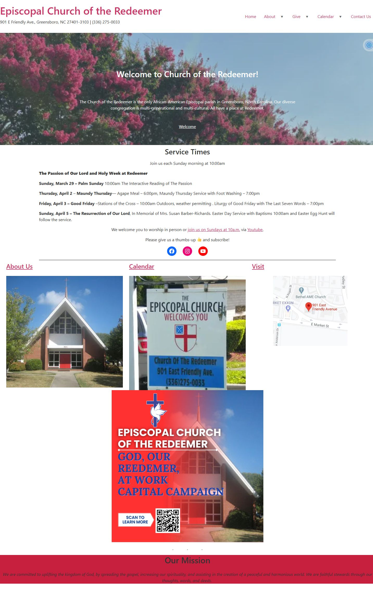
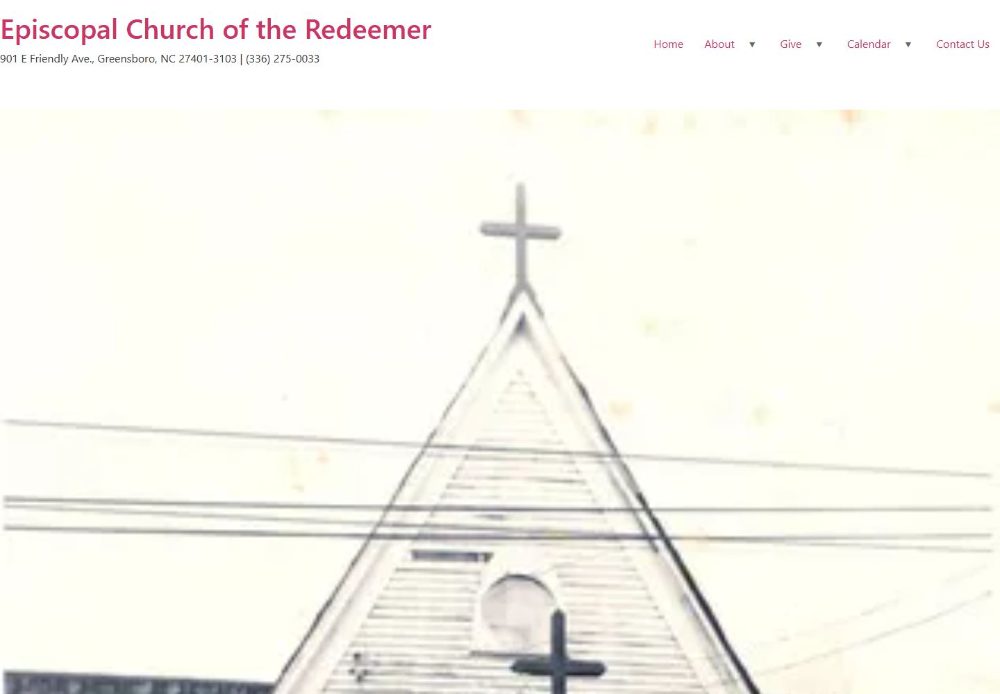
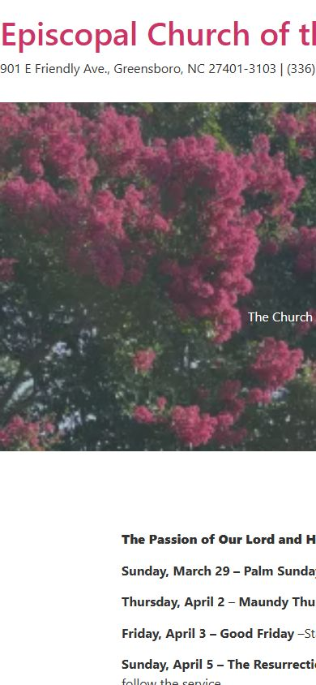
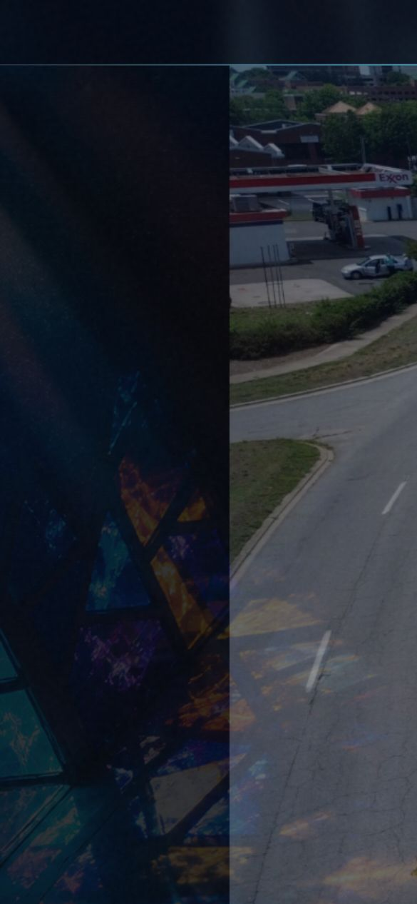

Meaningful pages and visitor tasks reviewed, before versus redesign
Independent redesign study / Greensboro, North Carolina
Most relevant if: buyers see what you do, but not why you are the stronger choice
Turning a digital bulletin board into a pathway to belonging.
Church of the Redeemer already had more than a century of history, an active community, and meaningful information. The transformation was about making that value easier for a first-time visitor to find, understand, and act on.
Independent redesign study · Page-by-page comparison · Results shown without guesswork


Reviewed pages that extended sideways beyond a phone screen
Pages with one clearly defined main heading
Length of the visual before-and-after film
How to read the numbers
Left is the original site. Right is the redesign.
The arrows describe a verified change in page structure or mobile usability. They do not claim that traffic, attendance, donations, or revenue increased.
- Visitor task
- Something a person came to accomplish, such as finding service times, planning a visit, watching online, giving, or making contact.
- Mobile overflow
- A layout problem that makes content extend beyond the phone screen, forcing sideways scrolling or cutting information off.
- Main heading (H1)
- The single primary heading that tells visitors, search engines, and assistive technology what a page is about.
- Prototype
- A working version of a proposed redesign used to test the experience before the organization approves and launches a live website.
See the change
The welcome was always there. The journey needed to reveal it.
The film compresses the strategic shift into one view: from information presented as a bulletin board to a digital front door organized around what a visitor is trying to do.
The real problem
The site had information. It did not yet tell a first-time visitor where to begin.
A new visitor had to translate church language, scan long pages, and infer what to do next. The missing piece was visitor orientation: immediate guidance that answers where am I, is this for me, and what should I do next?
When a website reflects the organization’s internal filing system instead of the customer’s questions, valuable work becomes harder to see.
ORIGINAL HOMEPAGEInformation without a clear journey
Drag to compare
Same community. A completely different first impression.
Move the slider to compare the first desktop viewport. The redesign prioritizes identity, location, service times, and three immediate actions before asking a visitor to explore deeper.
The strategy behind the style
Design the site around the decisions people arrive to make.
The visual change is dramatic, but the operating logic matters more. The redesign gives every visitor a clearer path from question to next step.
- 01
Start with human intent
Organize around visit, worship, watch, connect, serve, learn, and give—not internal departments.
- 02
Lead with belonging
Make place, history, and welcome visible before asking a visitor to decode programs or announcements.
- 03
Build a content system
Give every page one purpose, one clear heading, and a deliberate next action.
- 04
Respect the smallest screen
Replace horizontal overflow with layouts that remain usable at a real mobile width.
Evidence, not decoration
Make hidden value visible without flattening what makes it special.
The redesign did not invent a new story. It surfaced the church’s place in Greensboro, its history, its worship life, and the practical details a visitor needs.

1906 → NOW
Preserve the history. Improve the invitation.
For a historic Black Episcopal parish, modernization should not erase identity. The design system uses place-based imagery, architectural details, an editorial type hierarchy, and clearer paths so history and hospitality reinforce each other.
- Identity and location appear immediately
- First-time visitor questions have named destinations
- Important actions stay visible without overwhelming the story
Mobile is part of the strategy
A first visit often begins in someone’s hand.
In the original pages reviewed, nine extended sideways beyond the phone screen. The redesigned 19-page prototype kept its content inside the mobile viewport—the visible screen area—so visitors could read and act without sideways scrolling.


Verified structural comparison
What changed can be inspected. What happens next should be measured.
The comparison covers pages that successfully loaded during the study. It verifies page structure and mobile usability. It does not claim changes in attendance, giving, completed forms, or visitor engagement because the redesign has not been launched as the church’s live website.
MeasureOriginalRedesign
Meaningful pages reviewed10 pages; calendar did not load reliably19 working prototype pages
Pages extending beyond a phone screen9 reviewed pages0 pages
Pages with one clear main heading0 reviewed pages19 pages
What the page helps people do firstRead announcements and interpret internal labelsAnswer visitor questions and choose a next step
Current statusOriginal live websiteWorking redesign prototype; not yet launched
Why this matters in any industry
Your business may not need a church website. It may have the same visibility problem.
Organizations across professional services, construction, technology, manufacturing, government contracting, and community work often have real capability that is difficult to navigate from the outside.
Surface the value buyers cannot see
Find the expertise, outcomes, credibility, and customer questions buried across documents, people, and old pages.
Organize around the decision
Translate internal language into the questions a visitor asks before they trust, contact, visit, or buy.
Connect story to action
Turn identity, services, proof, and next steps into one coherent customer journey.
Define success before launch
Separate what the new structure clearly fixes from the customer actions that website analytics must verify after the site goes live.
Bring the problem, not a finished brief
What value is your current website making people work too hard to find?
Start with a free website readiness check, or use a free 30-minute intro call to talk through the friction you already see.
Assess my website Book a free intro call